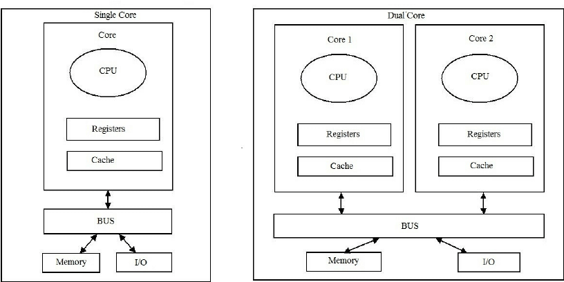

Keyboard shortcuts:
N/СпейсNext Slide
PPrevious Slide
OSlides Overview
ctrl+left clickZoom Element
If you want print version => add '
?print-pdf' at the end of slides URL (remove '#' fragment) and then print.
Like: https://wwwcourses.github.io/...CourseIntro.html?print-pdf
Parallel programming: multithreading and multiprocessing
Created for
Iva E. Popova, 2016-2024,

Shape the concepts
CPU-Bound and I/O-Bound Tasks
Overview
- Every task performed by modern computers can be classified as CPU-Bound or I/O-Bound.
- Understanding the type of task will help us determine which of the parallel programming libraries in Python to use (threading, multiprocessing, asyncio).
CPU-Bound Tasks
- We say that a task is CPU-bound when its execution time depends solely on the CPU's speed.
- Classic examples of such tasks involve heavy mathematical computations (e.g., summing the numbers from 0 to 100 billion).
- For such tasks, increasing the CPU power will improve the program's performance.
I/O-Bound Tasks
- When the execution time of a task is mainly determined by input/output (I/O) operations, such as reading/writing large files, the task is said to be I/O Bound.
- Classic examples of such tasks involve reading/writing large files; multiple HTTP and/or DB requests to servers.
- To improve the program's performance for such tasks, it is necessary to increase the speed of RAM and external memory, or network speed.
{kind=link}
Concurrency vs Parallelism
Concurrency vs Parallelism
- Concurrency in Python
- Refers to the ability to handle multiple tasks simultaneously.
- It can be achieved using threads or asynchronous programming.
- With threads, Python allows for concurrent execution of multiple tasks, making it suitable for I/O-bound tasks.
- Asynchronous programming with libraries like asyncio allows for non-blocking I/O operations by using event loops and coroutines, enabling high concurrency without the overhead of traditional threads.
- Parallelism in Python
- Parallelism in Python involves executing multiple tasks simultaneously using multiple processes or CPU cores.
- It can be achieved using the multiprocessing module, which enables developers to create and manage separate processes, allowing for efficient parallel execution of CPU-bound tasks.
- Parallelism is suitable for CPU-bound tasks that benefit from parallelization and can fully utilize multiple CPU cores.
Threads vs Processes
Single-core vs Multi-Core Processor
{kind=link}
- A core, in the context of computer hardware, refers to an independent processing unit within a central processing unit (CPU). Each core is capable of executing instructions and performing calculations independently of other cores on the same CPU.
- Threads are virtual entities. Multithreading performance is enhanced by algorithms for distributing tasks among hardware resources.
- Hyper-Threading Technology enables the operating system to recognize more CPUs than the actual physical units present.
Threads vs Processes

- Memory:
- A Process has its own individual memory segment, not shareable with other process. Inter process communication techniques are applied in order for process to share data
- Threads share same memory.
- A Thread lives in a Process. One Process can run multiple Threads.
- A python process has at least one thread - for the main programme.
Threads vs Processes - details

Thread-based parallelism
Thread-based parallelism
Multithreading in Python
- threading module is the preferred way in Python for thread-based "parallelism" (a note abou GIL!)
- A thread is created by the
Threadclass constructor. - Once created, the thread could be started my
start()method - Other threads can call a thread’s
join()method. This blocks the calling thread until the thread whose join() method is called is terminated
Creating Thread objects
tr_obj = threading.Thread(target=None, name=None, args=(), kwargs={}, daemon=None)
target- function to be run in a threadnameis the thread name. By default, a unique name is constructed of the form "Thread-N" where N is a small decimal numberargsis the argument tuple for the target invocationkwargsis a dictionary of keyword arguments for the target invocationdaemon- if not None, a daemonic thread will be created.- A non-daemon thread blocks the main program to exit if they are not dead. Daemonic thread do not prevent the main program to exit, and will be killed by the main process when exiting.
Creating and running thread - example
import threading
import time
def worker(x):
tid = threading.currentThread().name;
print("x = {} in {}".format(x, tid))
time.sleep(2)
# create the tread
tr = threading.Thread(target=worker, args=(42,))
# start the thread:
tr.start()
# wait until thread terminates:
tr.join()
print("Worker did its job!")
A more useful example
- You can enjoy the speed of multithreading in Python, if the threaded workers are not CPU intensive.
import threading
import time
def worker(x):
tid = threading.current_thread().name
# do some hard and time consuming work:
time.sleep(1)
print("Worker {} is working with {}".format(tid, x))
#################################################
# Sequential Processing:
#################################################
t = time.time()
worker(42)
worker(84)
print("Sequential Processing took:",time.time() - t,"\n")
#################################################
# Multithreaded Processing:
#################################################
tmulti = time.time()
tr1 = threading.Thread(target=worker, args=(42,))
tr2 = threading.Thread(target=worker, args=(82,))
tr1.start();tr2.start()
tr1.join(); tr2.join()
print("Multithreaded Processing took:",time.time() - tmulti)
Global Interpreted Lock (GIL)
- The GIL mechanism in Python does not allow more than one thread to work at a given moment.
- In multithreading, we don't have true parallelism but cooperative computation.
- When a thread is started, it acquires the GIL, but when it is in a pause state or performing I/O operations, it releases the GIL, which is then passed to another waiting thread.
- GIL @wiki.python.org
{kind=link}
Problem of shared state
- The problem of shared state with threads often arises when multiple threads access and modify shared data concurrently, leading to race conditions, data corruption, or inconsistent results.

- Note that in Python 3.10, there was an undocumented change related to the Global Interpreter Lock (GIL) that aims to mitigate certain types of race conditions.
- Even with that change, race condition prevention still generally requires explicit synchronization mechanisms like locks, queues, or other thread-safe data structures.
The problem of shared state - example
- Each thread increments the counter with 1. But at the end, counter value is not equal to the number of threads!
- It is even different on each execution!
import threading
import time
def worker():
global counter
tmp = counter
print("Before:",counter)
counter = tmp + 1
print("After:",counter)
counter = 0
# create some treads to count together:
thread_pool = []
for i in range(50):
tr = threading.Thread(target=worker)
tr.start()
thread_pool.append(tr)
# wait for tread to finish:
for tr in thread_pool:
tr.join()
print("Workers counted:", counter)
# Before: 0
# After: 1
# Before: 0
# After: 1
# ...
# Before: 31
# After: 32
# Workers counted: 32
Solution: Lock the critical sections
import threading
import time
def worker():
global counter
# lock the critical section:
lock.acquire()
print("Before:",counter)
counter += 1
print("After:",counter)
lock.release()
counter = 0
# create a lock
lock = threading.Lock()
# create some treads to count together:
thread_pool = []
for i in range(50):
tr = threading.Thread(target=worker)
tr.start()
thread_pool.append(tr)
# wait for tread to finish:
for tr in thread_pool:
tr.join()
print("Workers counted:", counter)
# Before: 0
# After: 1
# Before: 1
# After: 2
# ...
# Before: 48
# After: 49
# Before: 49
# After: 50
# Workers counted: 50
Process-based parallelism
Process-based parallelism
Multiprocessing in Python
- multiprocessing module is the built in module to create process-based parallelism in Python.
- A process is created by the
Processclass constructor. - Once created, the process could be started by
start()method - Other processes can call a process’s
join()method. This blocks the calling process until the process whose join() method is called is terminated - The multiprocessing package mostly replicates the API of the threading module
pr_obj = multiprocessing.Process(target=None, name=None, args=(), kwargs={}, daemon=None)
Programming guidelines for using multiprocessing
- There are certain guidelines and idioms which should be adhered to when using multiprocessing: Programming guidelines @python3 docs.
- But most important is to make sure that the main module can be safely imported by a new Python interpreter without causing unintended side effects (such as starting a new process)
- I.e. always use
if __name__ == '__main__':when using processes!
Creating and running process - example
import multiprocessing as mp
import time
def worker(x):
pid = mp.current_process().name;
print("x = {} in {}".format(x, pid))
time.sleep(2)
if __name__ == '__main__':
# create the process
p = mp.Process(target=worker, args=(42,))
# start the process:
p.start()
# wait until process completes:
p.join()
print("Worker did its job as separate Process!")
No GIL effect on processes
- You can use the full power of multiprocessing if your system have multiple cores.
import multiprocessing as mp
import time
def worker(r):
pid = mp.current_process().name
# do some hard and time consuming work:
global result
res = 0
for i in r:
res += i
if "Process-" in pid:
output.put(result)
else:
result += res
print("Worker {} is working with {}".format(pid, r))
if __name__ == '__main__':
#################################################
# Sequential Processing:
#################################################
t = time.time()
result = 0
worker(range(50_000_000))
worker(range(50_000_000,100_000_000))
print("Sequential Processing result: ", result)
print("Sequential Processing took:",time.time() - t,"\n")
#################################################
# Multithreaded Processing:
#################################################
t = time.time()
# Define an output queue
output = mp.Queue()
p1 = mp.Process(target=worker, args=(range(50_000_000),))
p2 = mp.Process(target=worker, args=(range(50_000_000,100_000_000),))
p1.start();p2.start()
p1.join(); p2.join()
print("Multiprocess Processing result: ", output.get())
print("Multiprocess Processing took:",time.time() - t,"\n")
# Worker MainProcess is working with range(0, 50000000)
# Worker MainProcess is working with range(50000000, 100000000)
# Sequential Processing result: 4999999950000000
# Sequential Processing took: 7.217836141586304
# Worker Process-2 is working with range(50000000, 100000000)
# Worker Process-1 is working with range(0, 50000000)
# Multiprocess Processing result: 4999999950000000
# Multiprocess Processing took: 4.363953113555908
Sharing state between processes (Inter-process communication)
- Processes in an operating system typically run independently and have their own memory space.
- Inter-process communication (IPC) refers to the mechanisms and techniques used by processes to communicate and share data with each other.
- There are several methods of IPC in modern operating systems:
- Shared Memory: Processes can map a shared region of memory into their address space, allowing them to read and write data directly.
- Pipes: One-way communication channels that allow the output of one process to be used as input to another process.
- Message Queues: Processes can send and receive messages through a message queue managed by the operating system.
- Signals: Processes can send signals to each other to notify about events or to request action.
- Socket Programming: Processes can communicate over network sockets, allowing IPC across different machines.
- The multiprocessing module provides
Value,ArrayandQueueclasses for sharing data between processes.
Example: share state between processes
import multiprocessing
# Function to be executed by each process
def increment_shared_counter(counter, lock):
for _ in range(100000):
with lock:
counter.value += 1
def main():
# Create a shared memory variable (integer) to act as a counter
counter = multiprocessing.Value("i", 0)
# Create a Lock to synchronize access to the shared counter
lock = multiprocessing.Lock()
# Create two processes, each incrementing the shared counter
process1 = multiprocessing.Process(
target=increment_shared_counter, args=(counter, lock)
)
process2 = multiprocessing.Process(
target=increment_shared_counter, args=(counter, lock)
)
# Start both processes
process1.start()
process2.start()
# Wait for both processes to finish
process1.join()
process2.join()
# Print the final value of the shared counter
print("Final counter value:", counter.value)
if __name__ == "__main__":
main()
# Final counter value: 200000
Data Parallelism
- The Pool object in multiprocessing module offers a convenient means of parallelizing the execution of a function across multiple input values, distributing the input data across processes (data parallelism)
- The
mapmethod of the Pool class is one of the most commonly used features. It distributes an iterable of data to the worker processes, applies a specified function to each item in parallel, and returns the results as a list in the same order as the input iterable.
from multiprocessing import Pool
import time
def worker(n):
return n ** 1000
if __name__ == '__main__':
# Define the range of numbers
numbers_range = range(100000)
# Multiprocessing Pool
start_time = time.time()
with Pool(5) as p:
pool_result = p.map(worker, numbers_range)
multiprocessing_execution_time = time.time() - start_time
print("Multiprocessing Pool took:", multiprocessing_execution_time, "seconds")
# Serial processing
start_time = time.time()
serial_result = [worker(n) for n in numbers_range]
serial_execution_time = time.time() - start_time
print("Serial processing took:", serial_execution_time, "seconds")
# Multiprocessing Pool took: 3.358834981918335 seconds
# Serial processing took: 5.694896459579468 seconds
Processes vs Threads - when to use which
- Multiprocessing Pros:
- Takes advantage of multiple CPUs and cores
- Avoids GIL limitations
- Memory leaks in one process would not harm the others
- Child processes could be killed
- An intuitive and easy to use module APIs (very close to threading)
- Very useful with cPython for CPU-bound processing
- Cons:
- Separate memory space is harder to manage.
- Larger memory footprint
Processes vs Threads - when to use which
- Threading Pros:
- Lightweight and low memory footprint
- Shared memory between threads - easier to manage.
- Perfect for responsive UIs, DB Querying, Online Data Retrieval, I/O-bound and other applications where a lot of background work is done
- Cons:
- A memory leak in one thread will corrupt all threads
References
References
Readings
Videos
- Python Multithreading/Multiprocessing - 6 videos on theme by codebasics
These slides are based on
customised version of
framework